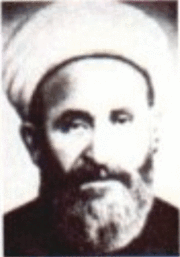

Vehbi (Çelik) Efendi (1862-1949)

Hülasatü’l-Beyan adlý tefsiriyle tanýnan, son dönem din alimi ve siyaset adamlarýndandýr. Konyalý Mehmet Vehbi Efendi olarak bilinmektedir. Soyadý Kanunu’ndan sonra Çelik soy ismini almýþtýr. II. Meþrutiyet’ten sonra birkaç kez Konya’yý temsilen Mecliste bulunmuþ ve Meclis Baþkanvekilliði ile Bakanlýkta bulunmuþtur. Sultan Vahdeddin’in Ýstanbul’dan ayrýlmasýndan sonra, O’nu padiþahlýk ve halifelikten azleden ünlü fetvayý vermiþtir. Kurtuluþ Savaþý’nýn verildiði yýllarda Konya’da bulunmuþ ve Kuva-yý Milliyecileri desteklemiþ, halký mücadeleye teþvik etmiþtir. Büyük Millet Meclisi’nde de bulunmuþ, Fevzi Paþa kabinesinde Evkaf ve Þer’iyye Vekili olarak görev almýþtýr. Risale-i Nur’da ismi zikredilmiþ ve hakkýnda iltifatlara yer verilmiþtir.Vehbi Efendi, 1862 yýlýnda Konya’nýn Hâdim Kazasý’nýn Kongul Köyü’nde doðdu. Ýlim ve irfanla uðraþan Çelik Hüseyin Efendinin oðludur. Babasýnýn Çelik olan lakabýný, soyadý kanununun çýkmasýndan sonra, soyadý olarak aldý. Ýlk eðitimini köyünde aldý. Kur’an-ý Kerim’i hatmettikten sonra kýraat ve tecvit dersleri aldý. Arap dili ve edebiyatýna dair eserler okuyarak eðitimini sürdürdü. 1877 yýlýnda ilçesi Hâdim’de bulunan medreseye kaydýný yaptýrdý. 1880 yýlýnda öðrenimini tamamlamak maksadýyla Konya Þirvaniye Medresesi’ne giderek ilim tahsiline devam etti.
Vehbi Efendi, Konya Müftüsü Hacý Hüseyin Efendi’den Arapça dersini alýrken, Tavaslý Osman Efendi’den de fýkýh ve usul-i fýkýh derslerini aldý ve bu eðitimini tamamlayarak mezun oldu. 1888 yýlýndan itibaren de Konya’da hocalýk yapmaya ve ilk önce Konya medreselerinde çalýþmaya baþladý. Mahmudiye Medresesi müderrisliðini sürdürdüðü sýrada, Konya Hukuk Mahkemesi üyeliðine seçilmesi üzerine müderrislikten ayrýldý. 1903 yýlýnda ise Konya’da yeni açýlmýþ bulunan Hukuk Mektebi’ne veraset ve intikal müderrisi olarak tayin edildi.
Meþrutiyetin ikinci kez ilan edilmesi üzerine (1908) Konya mebusu olarak Meclis-i Mebusan’a girdi. Meclisin daðýtýlmasý üzerine Konya’ya döndü. Memleketine döndükten sonra yeniden eðitim-öðretim iþiyle ilgilenmeye ve eser yazmaya baþladý. Ünlü tefsirini 1911-1915 yýllarý arasýnda devam eden dört yýllýk çalýþmasý sonucunda tamamladý. Son Osmanlý Mebusan Meclisine Konya adayý olarak katýldý. Ancak, Ýstanbul iþgal edildi ve Meclis de daðýtýldý (1920). Sultan Vahdettin ile görüþmek üzere seçilen heyette yer aldý ve Padiþahtan Anadolu’daki direniþ hareketini desteklemesini istedi. Ayný heyet Ankara’ya giderek burada da görüþmelerde bulundu.
Kurtuluþ Mücadelesi’nde aktif rol alan Hoca Vehbi Efendi, yaptýðý konuþma ve vaazlarla halký düþmana karþý mücadeleye davet etti. Konya Valisinin halk ile anlaþamamasý ve Ýstanbul’a gitmesi üzerine bir süre Konya Vali vekilliðinde bulundu. Büyük Millet Meclisi’nin açýlmasý üzerine Konya Mebusu olarak Ankara’ya gitti. Bir ara Meclis baþkan vekilliðinde de bulundu. Daha sonra Fevzi Paþa tarafýndan kurulan hükümette Vakýflar ve Þer’iyye Bakanlýðý’na getirildi. Padiþah’ýn Ýstanbul’u terk etmesinden sonra, Sultan Vahdeddin’i padiþahlýk ve halifelikten azleden fetvayý hazýrladý. Bu sýrada bakanlýðý devam etmekteydi. Halifenin görevinin; Ýslam hak ve menfaatlerini korumak olduðunu belirterek, yurtdýþýna çýkan Vahdeddin’in halifeliði yitirdiðini ve yeni halifenin seçilmesi gerektiðini, fetvasýna ilave etti. Meclis tarafýndan (tarihte ilk kez oya sunulan) fetva kabul edildi. Ayný fetva gereðince, Abdülmecid Efendi halifelik makamýna seçildi.
Vehbi Efendi’nin içinde yer aldýðý hükümetin meclisteki güvensizlik oyu ile düþmesi üzerine bakanlýk görevi, Nisan 1923’te meclisin de feshi ile mebusluk görevi son buldu. Bu geliþmelerden sonra kendisi de tamamen siyasetten ayrýldý. Daha çok ilimle uðraþtýðý ve siyasetten çekildiði halde zaman zaman baskýlara muhatap oldu. Tutuklandýðý zamanlar oldu. Ýzmir Suikastý ile iliþkisi olduðu iddiasýyla yirmi gün gözaltýnda bulunduruldu. Suçsuzluðunun ortaya çýkmasýyla Ýstiklal Mahkemesi’nde yargýlanmaktan kurtuldu. Konya’da, 27 Kasým 1949’da vefat etti.
Hoca Vehbi Efendi’nin Risale-i Nurla ilk karþýlaþmasýnýn pek müspet netice vermediði hatýralardan anlaþýlmaktadýr. Kötü maksatlý kiþiler tarafýndan kendisine Risaleler götürülerek, tefsir olup olmadýklarý sorulmuþ ve kendisi de “Tefsir deðildir” diyerek itirazda bulunmuþtur. Ýtiraz Bediüzzaman’ý rahatsýz etmiþse de herhangi bir mukabelede bulunmamýþtýr. Daha sonra, Isparta’nýn Hacýlar Köyü’nden bir çoban, Bediüzzaman’a giderek, “Üstadým ben Vehbi Efendiye bu risâleleri okutturacaðým” diyerek müsaade ister ve hemen Konya’ya doðru yola koyulur. Konyalý halýcý Sabri vasýtasýyla Vehbi Efendi’nin yanýna gider. “Isparta’dan buraya kadar niçin geldin?” þeklindeki soruya, “Hocam bizim orada Bediüzzaman diye birisi var. Þu iki kitabý yazmýþ, bundaki yanlýþlarý bul da, ona göstereyim” der. Eserleri okuyup inceleyen Vehbi Hoca;
“Vallahi kardeþim. Bediüzzaman seni benim imanýmý kurtarmaya, imdadýma göndermiþ. Ben daha önce bu kitaplarý görseydim bütün eserlerimi yakardým. Sen benim yerime Bediüzzaman’ýn elini ayaðýný öp! Bu eserler de bende kalsýn, belki necâtýma sebep olur” diyerek duygularýný dile getirir. (http://www.yeniasya.com.tr/2005/05/29/yazarlar/nejateren.htm)
Bediüzzaman, talebelerine (özellikle Konya’dakilere) yazdýðý bazý mektuplarýnda, Vehbi Efendi’nin adýný zikretmiþ ve iltifatlarda bulunmuþtur: “…çok mübarek tefsirin çok muhterem ve kýymettar sahibi olan Hoca Vehbi Efendi…” (Emirdað Lahikasý, 1997, s. 113), “… Konyalý Sabri'nin Refet'e yazdýðý mektubunu gördüm, ondan bildim ki, bu Sabri, öteki Sabri gibi gayet hâlis ve samimî ve çalýþkan bir Nurcudur. Bin bârekâllah hem ona, hem onu teþvik ve teþcî eden ve hocalarýn yüzlerini ak eden Konya âlimlerine! Baþta müfessir mübarek Hoca Vehbi…” (Emirdað Lahikasý, s. 147.), “…ve baþta müfessir, hacý ve hoca Vehbi Efendi ve Konya ulemasýnýn Nurlara karþý hüsn-ü teveccühleri ve tasdikkârane münasebetleri…” (Emirdað Lahikasý, s. 236), ifadelerine yer veren Bediüzzaman, selam ve dualarýný iletmiþtir.
Eserleri
En önemli eseri, Hülasatü’l-Beyan fi tefsiri’l-Kur’an adýný taþýyan tefsiridir. Bu tefsiri dört yýlda tamamlamýþtýr. On beþ ciltten oluþan eser ilk baþlarda iki ayrý zamanlarda basýlmýþ ise de daha sonra çeþitli baskýlarý yapýlmýþtýr. 1966-69 yýllarý arasýnda ise ilk defa Latin harfleriyle basýlmýþtýr. Tefsir ilmi açýsýndan pek yeterli görülmemekle birlikte, halk arasýnda daha çok raðbet görmüþtür. Dört yüz seksen iki hükmün yer aldýðý eseri, Ahkam-ý Kur’aniyye adýný taþýmaktadýr. Hükümler alfabetik sýraya göre dizilmiþ ve bu þekilde ele alýnmýþtýr. 1922’de ilk defa basýlan eserin daha sonraki dönemlerde bir çok baskýsý yapýlmýþtýr. el-Aka’idü’l-hayriyye fi tahriri mezhebi’l-fýrkati’n-naciye ve hum Ehlü’s-sünne ve’l-cema’a ve’r-red’ala muhalifihim adlý eserinde inanç konusuyla ilgili olarak yüz otuz üç mesele incelenmiþtir. Arapça olarak yazýlan eser 1919 yýlýnda tamamlanmýþtýr. Müellifi tarafýndan Türkçe’ye, Akaid-i Hayriye Tercümesi adýyla çevrilmiþtir. Bir diðer eseri ise, Sahih-i Buhari Tecrid-i Sarih Muhtasarý Tercümesi adýný taþýmaktadýr. Ayný zamanda bir siyaset adamý olan Hocanýn siyasi hatýralarý ise hala basýlmamýþtýr.